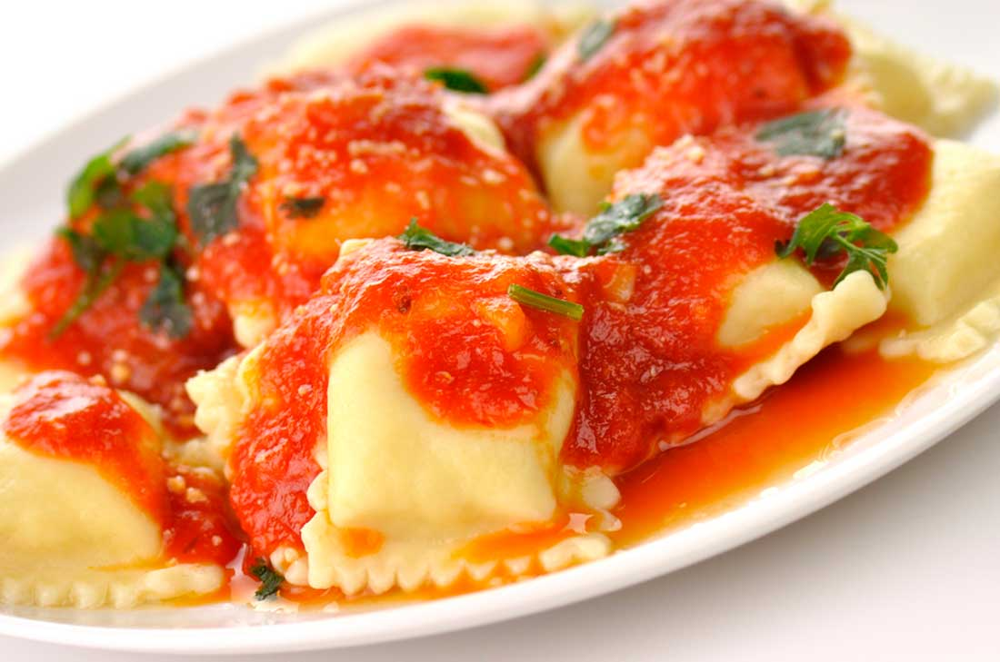

Recetas de Platos Principales
Ravioles de Ricota con Salsa de Tomate

Ingredientes:
- 500 g de ravioles de ricota (caseros o comprados)
- 1 lata de tomate triturado
- 1 diente de ajo
- 1/2 cebolla picada
- 2 cucharadas de aceite de oliva
- Sal y pimienta a gusto
- Hojas de albahaca fresca (opcional)
- Queso rallado para servir
Preparación:
- En una sartén, salteá el ajo y la cebolla picada en aceite de oliva hasta que estén dorados.
- Agregá el tomate triturado y cociná a fuego medio por 15 minutos. Condimentá con sal, pimienta y albahaca si querés.
- Mientras tanto, herví los ravioles en agua con sal según las instrucciones del paquete o receta casera.
- Colá los ravioles con cuidado y servilos con la salsa caliente por encima.
- Espolvoreá con queso rallado y decorá con más albahaca si te gusta.
Tip: Si la salsa está muy ácida, podés agregar 1 cucharadita de azúcar para equilibrar el sabor.